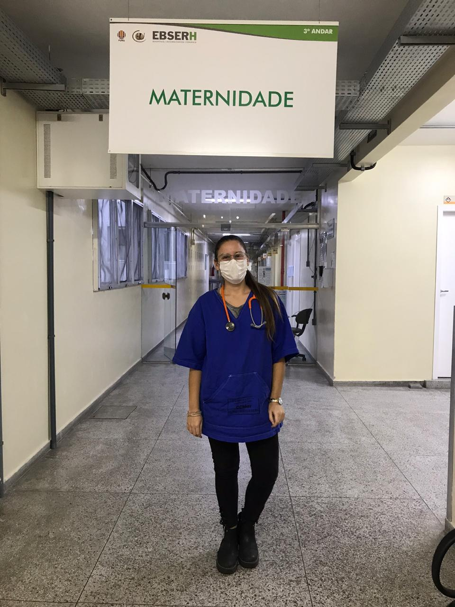

Alunos internacionais contam como o novo coronavírus interferiu em seus sonhos e objetivos acadêmicos
Estudantes intercambistas se preparam meses antes de iniciar uma viagem para outro país e ingressar em uma nova universidade buscando seus maiores sonhos e objetivos acadêmicos e, neste ano, foram surpreendidos por um grande obstáculo: uma doença viral altamente contagiosa, uma pandemia. A rotina acadêmica é completamente impactada e novas medidas de segurança devem ser tomadas, agora, cabem a eles tomarem as melhores decisões sobre os seus futuros que se encontram incertos em meio ao caos causado pela doença.
Em razão dessa pandemia provocada pelo novo coronavírus (COVID-19), governos foram obrigados a estabelecerem o isolamento social como tentativa de diminuir o contágio, atingindo bruscamente o setor educacional, o qual decretou a suspensão das atividades acadêmicas por período indeterminado. A partir disso, escolas e universidades buscam prestar apoio aos estudantes estabelecendo as medidas de proteção mais adequadas durante a realidade incerta e delicada em que vivemos.
Com o avanço do número de contaminados pelo coronavírus no Brasil, a Universidade Federal do Rio Grande (FURG) visando, prioritariamente, a saúde de seus estudantes, adotou um Plano de Contingência com o objetivo de dar orientações para um ambiente institucional mais seguro e saudável, bem como formas de lidar com casos suspeitos e confirmados da doença. Diante disso, o plano dispõe da suspensão de aulas, eventos e atividades extracurriculares até que se restaure a normalidade. A Secretaria de Relações Internacionais (REINTER) da FURG - responsável pelos processos de internacionalização da instituição - tratou de desenvolver instruções de proteção e segurança, bem como oferecer o melhor apoio possível aos estudantes que se encontram, ainda, em mobilidade acadêmica, tanto os internacionais que permanecem na FURG, quanto os alunos que estão no exterior.
As mobilidades acadêmicas
No primeiro semestre de 2020, a FURG recebeu sete (7) estudantes estrangeiros advindos de programas de mobilidade como BRACOL e Acordos de Cooperação, vindos da Colômbia, e do programa Escala de Graduação AUGM, com alunos vindos da Argentina, Paraguai e Bolívia. Ao mesmo tempo, 11 discentes da FURG tiveram a possibilidade de iniciar seu intercambio por meio do programa IberoAmericana Santander com destino para Portugal, Escala AUGM para Paraguai, Argentina e Bolívia, BRACOL para a Colômbia e BRAMEX para o México.
A intercambista argentina Carola Turquetti, estudante de Medicina da Universidad Nacional del Litoral (UNL), viu sua experiência na FURG, possibilitada pelo programa de mobilidade Escala AUGM, sendo interferida pelo surto da doença. Ao chegar em Rio Grande, o principal objetivo da aluna de Medicina era o desenvolvimento de seus estágios no Hospital Universitário (HU). “Por causa da pandemia, as aulas pararam aqui na FURG, mas eu consegui continuar com o meu estágio, só que no HU os atendimentos estão mais restritos” explica a futura médica.
Quando questionada sobre os principais aprendizados durante a sua experiência no hospital a estudante destaca sobre os novos conhecimentos adquiridos para enfrentar uma epidemia. “Tenho aprendido técnicas de proteção individual e orientações para proteção coletiva. É bastante desafiador, mas o conhecimento que vou adquirir aqui será essencial para levar ao meu país que também sofre com essa pandemia”, relata.

Carola Turquetti trabalhando em seu estágio no Hospital Universitário
Carola sente-se muito orgulhosa de sua escolha de profissão e lembra da importância da Ciência na resolução desse problema global. “Me sinto lisonjeada em estudar Medicina e poder contribuir de alguma forma no combate dessa pandemia. Sabemos que hoje a Ciência ganha destaque na busca pela cura desse vírus”, diz a jovem.
Além dela, Aracely Díaz, estudante de Psicologia da Universidad Nacional de Itapúa (UNI), no Paraguai, também teve sua experiência de intercâmbio na FURG afetada pelo surto de coronavírus. A jovem, vinda pelo programa Escala AUGM, tinha o objetivo de desenvolver seus estudos na FURG, buscando o enriquecimento pessoal e acadêmico.
Com a suspensão de aulas que aconteceu desde o aparecimento do novo vírus, parte de sua experiência teve que ser interrompida. Apesar disso, Aracely buscou desenvolver aspectos pessoais durante a permanência no Hotel Internacional da FURG – local destinado a residência estudantil estrangeira. “Convivo com muitos colegas latinos e tento aprender o idioma, me adaptando com outros costumes, no qual irá melhorar as minhas capacidades de comunicação e me tornar mais independente”, argumenta.
A estudante decidiu permanecer na universidade por imaginar que poderia continuar com sua rotina de estudos virtualmente. “Pensei que teriam aulas virtuais, mas quando decidi, não sabia que as aulas seriam canceladas. Agora é difícil voltar ao Paraguai”, expressa. Ela ainda relembra sobre a dificuldade de enfrentar uma pandemia em um país totalmente desconhecido e novo. “Uma das maiores dificuldades de viver em outro país durante essa situação, do meu ponto de vista, é ter a família longe” manifestou a jovem.
Aracely Díaz no Campus Carreiros da FURG
De toda maneira, ela sente-se segura em permanecer na FURG durante uma situação tão delicada. “Sou muito grata as autoridades da universidade que antes mesmo de chegar aqui no Brasil, se preocupavam conosco e nos davam os melhores cuidados.”, expõe. De toda forma, Aracely extrai algo bom dessa nova experiência. “Após essa situação acredito que é possível transformar o assunto do confinamento em uma oportunidade. [o confinamento] Incentiva a tomada de decisão, a solução criativa de problemas e, acima de tudo, a adaptabilidade, a fim de garantir a resiliência”, assegura.
Da FURG para o mundo
Por outro lado, Augusto Setti – estudante de Engenharia de Computação na FURG – tinha o sonho de ter novas vivências em outra universidade, com o objetivo de ter contato com novos projetos e atividades que explorem a sua área, além de melhorar o seu espanhol. Por isso, se preparou para uma experiência de intercâmbio nesse primeiro semestre na Universidad Nacional del Litoral (UNL), na Argentina, pelo programa Escala AUGM.
Com o surgimento da pandemia e, consequentemente, do isolamento social, Augusto viu sua experiência tomando rumos diferentes do que imaginava. “Como minha universidade adotou aulas a distância logo no começo da quarentena os professores tiveram pouco tempo para organizarem suas atividades, mas a experiência, em respeito ao ensino, vivência em sala de aula e o contato que o intercâmbio proporciona, foi fortemente prejudicada”, explica o estudante.
O futuro engenheiro teve frustrado o seu objetivo de ter mais contato com grupos de estudos e professores que o ajudassem a explorar seu desenvolvimento científico na universidade, devido as medidas de proteção adotadas para conter a disseminação do vírus. “Minha rotina de estudos também foi bastante prejudicada, pois não estou acostumado ao modelo EaD (Ensino à Distância), que não está nem próximo do ideal”, diz o estudante que se sentiu pressionado com a quantidade extensa de horas de dedicação às matérias.
Segundo Augusto, a sua universidade de destino tomou as melhores medidas para prestar apoio aos estudantes internacionais e colaborar para que se mantivessem bem fisicamente, mentalmente e bem informados sobre a situação. “Temos acesso a auxílio médico, odontológico, psicológico e nutricional gratuito. Fomos instruídos a seguir as normativas que o governo da Argentina lançasse e a realizar a quarentena obrigatória”, relata.
Ter sua experiência interferida pelo novo coronavírus, fez Augusto se questionar sobre suas expectativas e incertezas em permanecer no país. “Muitos estudantes vêm de longe para ter a vivência de sala de aula, cursar disciplinas que são práticas, conhecer novos lugares e viajar, mas se deparam com uma situação completamente adversa”, relata.
Apesar da universidade oferecer um ambiente seguro, o estudante decidiu retornar ao Brasil, mesmo com o risco de contaminação. “Estar fora de meu país não se encaixa mais com os sentimentos e ideias que estou tendo agora. Penso que pode ser mais proveitoso regressar ao Brasil para estar próximo da minha família e amigos e poder pensar melhor sobre minha vida acadêmica e profissional numa etapa seguinte”, expõe o estudante.
Assim que regressar ao seu país de origem, Augusto pretende continuar seguindo as ordens da quarentena de maneira responsável, além de tomar a maior quantidade de medidas possíveis para garantir a segurança de seus familiares e pessoas com as quais, eventualmente, terá contato.
Ao ser questionado sobre o fim de sua experiência, Augusto diz que não sente que seu intercâmbio tenha sido interrompido, mas que as circunstâncias tenham mudado profundamente. “Procuro não pensar em tudo que poderia ter vivido se estivéssemos em outras condições, tento tratar com a materialidade do que tenho, e nesse aspecto minha viagem e imersão proporcionaram-me experiências muito diferentes das quais esperava”, argumenta.
O estudante conta que gostaria de ter tido mais contato com pessoas de fora de sua residência estudantil – onde fez muitos amigos de outros países – mas que, apesar de tudo, pôde desfrutar do que seria um intercâmbio em condições “normais”, tendo a oportunidade de conhecer um pouco do que o país lhe oferece. “Sinto que já vivi diversas experiências, mas que agora é um momento para pensar mais em mim e me dedicar a meu ofício, hobbies e família”, finaliza.
Augusto Setti (segundo aluno da última fila, da esquerda para a direita) e seus amigos internacionais na Residência Estudantil
A REINTER
Durante a pandemia, a Secretaria de Relações Internacionais (REINTER) da FURG permanece em constante trabalho, o qual tem se desenvolvido em três eixos: no acompanhamento de alunos em mobilidade na FURG e no exterior, na manutenção e renovação de convênios – acordos entre universidades visando a troca de estudantes entre países e colaboração científica - e na participação da REINTER em redes internacionais de cooperação como Grupo Coimbra de Universidades Brasileiras (GCUB), Associação de Universidades Grupo Montevidéu (AUGM) e Associação Brasileira de Educação Internacional (FAUBAI), por meio de reuniões e discussões através da comunicação remota.
Diante dos casos para a manutenção da mobilidade dos estudantes, como o impedimento do transporte e fechamento de fronteiras ou até mesmo sendo uma opção do estudante em permanecer no país escolhido, a REINTER procurou dar apoio aos estudantes de mobilidade que escolheram permanecer na FURG - seguindo orientações para prevenção da COVID-19 dadas pela Organização Mundial da Saúde (OMS) - mantendo o auxílio moradia e alimentação sem nenhum custo, os quais já são garantidos pela política da universidade dentro de programas de mobilidade, e, para mais, oferecendo um auxílio financeiro emergencial. Ademais, os estudantes são devidamente instruídos sobre o Plano de Contingência adotado pela universidade e sobre como proceder na prevenção da doença. É importante salientar que todos os estudantes em mobilidade acadêmica na FURG ou no exterior contam com um acompanhamento semanal online sobre o seu estado de saúde.
A REINTER reconhece que essa crise gerou problemas que afetam a colaboração e o intercâmbio internacional devido as dificuldades de mobilidade, mas também avalia sobre a fase pós-pandemia. O Secretário de Relações Internacionais, Prof. Milton Asmus, acredita que o sistema internacional afetado fatalmente avançará para uma recuperação que deverá acontecer em áreas tecnológicas, sociais, econômicas, ambientais e educacionais. “É importante que a gente esteja projetando que o período pós-pandemia é um período de intensa cooperação internacional e a liderança desse projeto caberá a governos e instituições intergovernamentais com o papel importante das universidades no setor de relações internacionais para tratar da recuperação desse sistema”, diz o secretário.